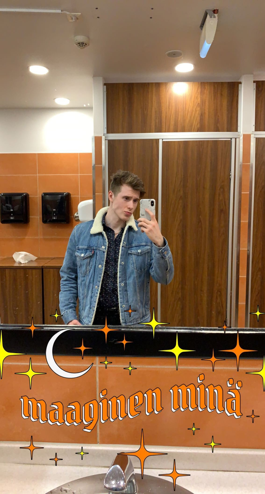

Etusivu
Harrastukset
Sosiaalinen media
Fakta #1
Opiskelee tällä hetkellä Oulun Ammattikorkeakoulussa tietojenkäsittely tradenomiksi ensimmäistä vuotta.
Fakta #2
On samalla töissä Oulun gigantissa myyjänä ja sitä kautta hänellä on kokemusta asiakastietojen käsittelystä.
Fakta #3
Vapaa-ajalla Jami tykkää nähdä kavereita, käydä salilla, kiipeillä ja harrastaa potkunyrkkeilyä.
